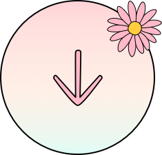
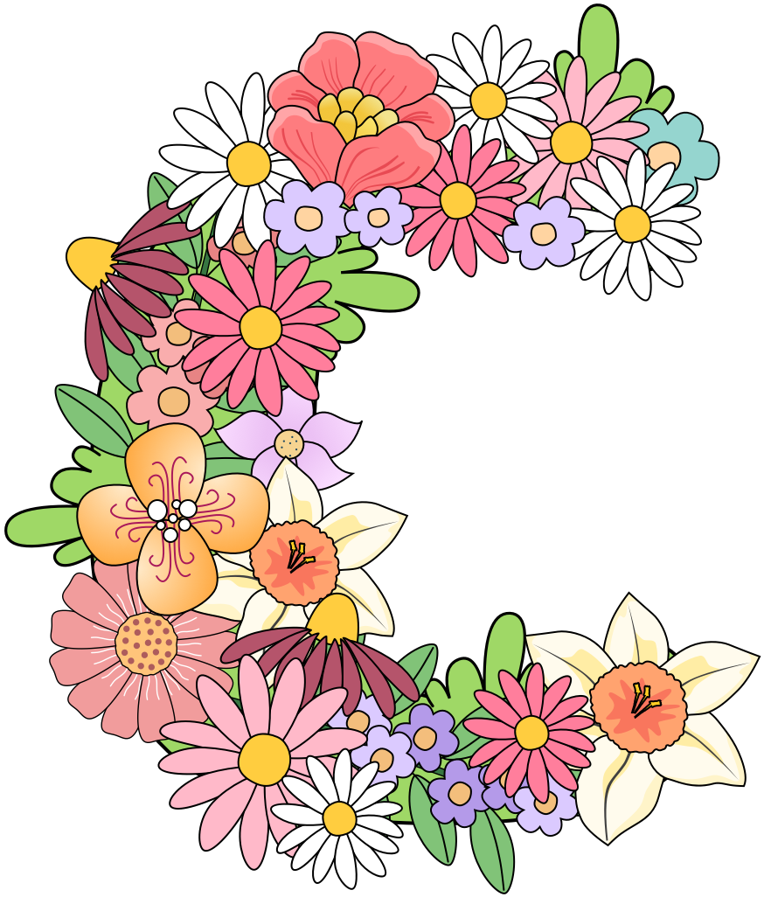
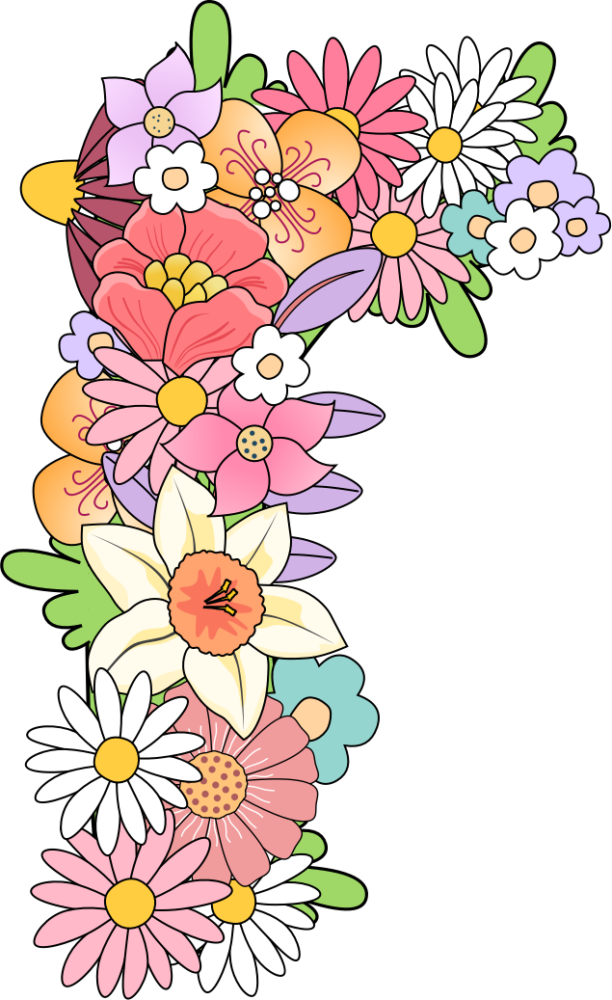
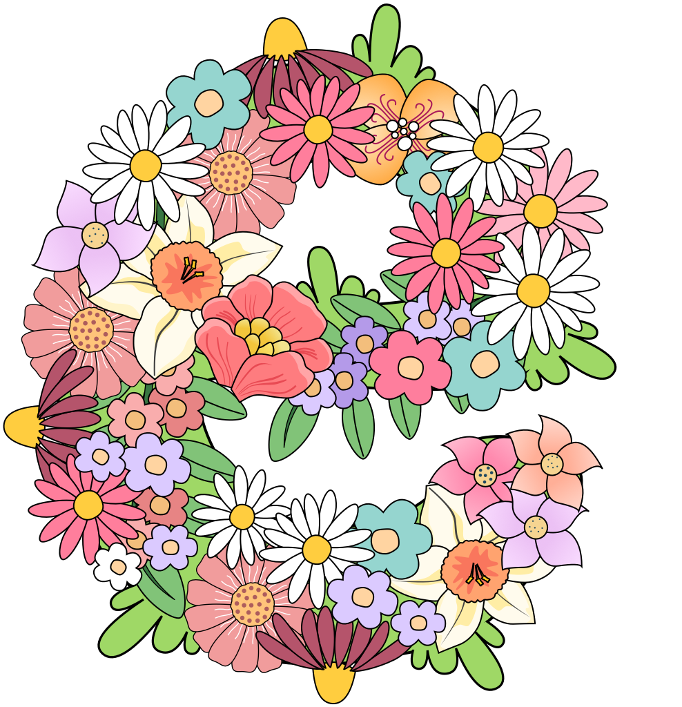
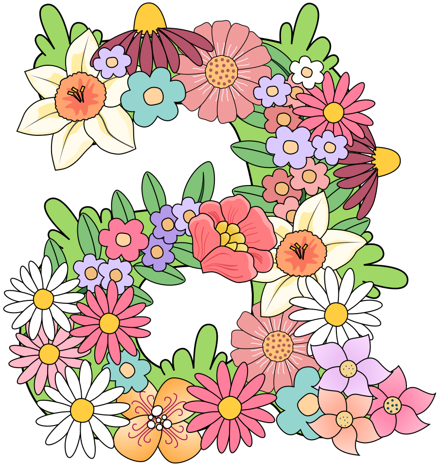
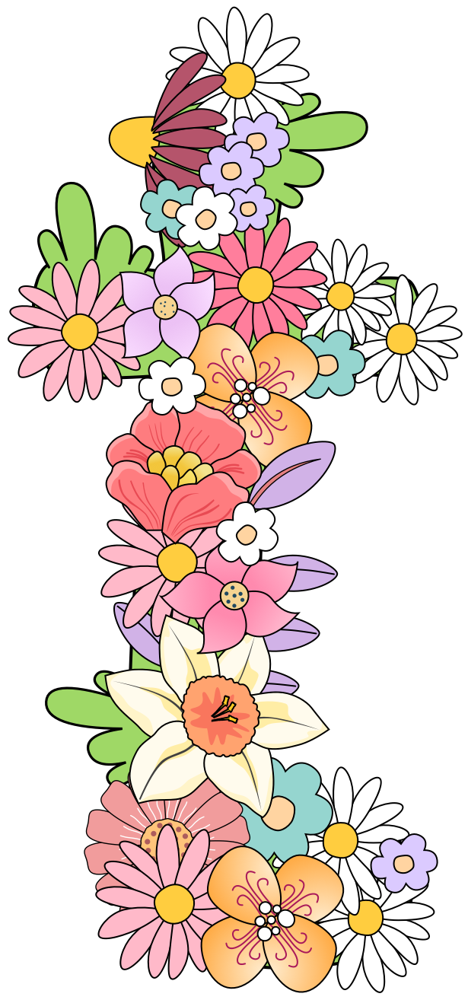

A Beautiful Goodbye
Alzheimer's didn't allow her to remember, but the force of love worked a miracle
P.S. I love you
Loading . . .






Creating is simply part of how I move through the world. Almost every day I make something: a drawing, a small interface, a song, a recipe, an idea, a plan. It is my way of expressing myself, connecting with others, learning, making sense of things, having fun, and being alive.
After nearly two decades working in technology, design has always been the thread running through everything I do. I enjoy exploring interfaces, illustration, writing, music production, accessibility, and the small details that make digital experiences feel thoughtful and human.
This space gathers some of those visual explorations.
Pieces where curiosity, craft, and play meet.
UX Design, Design Thinking, Case Studies, UI Design
Empathize, Define, Ideate, Prototype, Test. Repeat!
Design Thinking tackles every problem from the point of view of a designer,
with a user-centered approach.
Interviews, surveys, user research methods,
assumptions, validations, Personas, problem statements.
Moodboards, style tiles, design systems, UI design for mobile apps and desktop.
Interactive prototypes with Marvel or Invision and microinteractions with Principle.
Perfection is achieved not when there is nothing more to add, but when there is nothing left to take away.
A user interface is like a joke. If you have to explain it, it's not that good.
Save animals while learning a language!
The project started with just an idea and a blank paper: "Design of an app for children to learn a new language while having fun." After a UX research, interviews, and user and market research, these are the high fidelity design screens for the mobile app for kids.
For the complete Case Study, interactive prototype, full set of screens, and the whole UX and UI process, visit this Medium article .


Save Piggy from the Butcher!
Game for the browser to train DOM manipulation, Javascript classes and objects, developed in HTML5, CSS3 animations, and Vanilla Javascript (ES6). The game consists in saving the pig from the butcher. Dodge the knives thrown from the sky, while collecting fruits from the field on his way.


These below are my favorite case studies and articles about anything related to UX.

Sketchnoting is for you, even if you can't draw
Sketchnoting is about capturing ideas, not about creating a piece of art!

From the Eyes of a Backpacker Traveler — a UX Case Study
I combined my passion for traveling with my early steps as a UX/UI Designer to spot UX improvement areas in a traveling app

Designing a Dream Option for Our Pets — Blablapet
The idea of a new feature so that users can reserve seats for their pets and travel with or without them.

Here is What Happens When You Mix Jamón with UX Design
The Jamometre, a yummy Case Study

Case study: Designing a language app for kids
From one initial idea to a mobile app's high fidelity design prototype for children.

First Week Back to School in My Thirties
The first five days at a UI/UX Design school was a life-changing experience. Here is my very personal side of the story.
Keen on childrens' style and cartoons.
In my spare time, I like to design - anything!
Icons for apps or websites, logos, illustrations.
Anything that can be drawn by hand can also be vectorized and used in our designs.
I specially enjoy joining drawing challenges and sharing my growing process in this
Instagram account dedicated to it.
There's an amazing and supportive artists community out there!
Writing as my creativity nourisher.
Writing is the closest thing I have to meditation.
It is a real fuel for my creativity and awakens the awareness of my life.
I write about anything that comes to mind: past experiences, people I love,
anything I have seen or heard that has prompted me to reflect.
By writing, I talk to myself, to others, I learn from mistakes,
I analyze, depeen, observe, study my mind.
For more stories, I host all of them under my
Medium profile,
where I write regularly.
Article
Publication
Alzheimer's didn't allow her to remember, but the force of love worked a miracle
P.S. I love you
Abusing a kid can destroy their entire existence, and I've seen it up close in the life of a woman I love.
Fearless she wrote
Nothing will be the same after this pandemic
P.S. I love you
A love letter to my baby, who will be in our lives in a few days.
P.S. I love you
I just lost my parents, and their end was magical
The ascent
We appreciate life more intensely since confinement
P.S. I love you
After my first love tore me apart, I understood why.
The ascent
All my life, they've asked me, “Do you have a boyfriend?”
Fearless she wrote
How pitiful can someone's life be if one can only feel joy over someone else's pain?
P.S. I love you
Our baby is growing in my belly as we live in a pandemic peak
Fearless she wrote
I couldn't tell them in person that their daughter died
The ascent
We will never forget that day; she was going to be a grandmother.
The ascent
Contact me in:
moni.sm@gmail.com